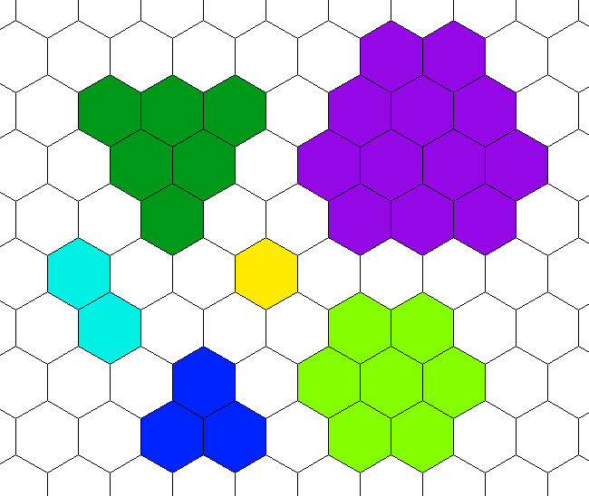

Combat in this game is meant to be fluid and flexible. Players are encouraged to simply say what they want to do rather than using the terminology of the game's mechanics.
There is no “turn order” in this game, characters act how they wish when they see fit. However, there are Rounds of combat to keep track of time and moderate how much one character can do in that time frame.
Energy is used to keep track of how much is done in a Round. Each character gets 5 Energy each Round. Energy is used to perform actions.
Actions
3 Energy = Melee Attack, Run
2 Energy = Ranged Attack, Quick Run, Pick Up Item, Unarmed Attacks
1 Energy = Shift, Stand Up
Melee Attack: Using 3 Energy you attack a target within your Reach with a melee attack. This represents not just a single blow but a series of strikes intended to circumvent the guard of an opponent. (see Melee Attacks)
Ranged Attack: Using 1 Energy you attack a target with a ranged attack (this includes thrown weapons). (see Ranged Attacks)
Load: This action loads a ranged weapon with ammunition. Energy cost varies depending on weapon used.
Shift: Using 1 Energy or 2 Agility you move 1m.
Run: Using 3 Energy you run your Speed.
Sprint: You can turn any full Run action (3 Energy cost) into a Sprint action by spending 1 Stamina. You then move an additional amount based on your Leg Strength (see Leg Strength).
When running or sprinting, whenever you turn sharply by 45 degrees, you sacrifice 1m of movement. This means that reversing the direction of your movement sacrifices 2m of movement. This applies to back-to-back movement actions.
Agile Move: Once per Energy you spend on a non-movement action, you may also move one meter as an Immediate Interrupt by spending 1 Agility. This represents your ability to move slowly while attacking, drawing a weapon, rummaging through a bag, or performing other tasks. The GM may decide that certain types of terrain may not be moved through with an Agile Move.
Jump: You may Jump immediately after having moved at least 2m by spending 1 Energy and 1 Stamina. Otherwise, it takes 2 Energy and 1 Stamina to Jump. If you Jump further than you could Run using 2 Energy, additional Energy must be spent to account for the time spent traveling through the air. Your Jump Distance/Reach can be increased by your Leg Strength. (see Leg Strength) If you are Sprinting before the jump, you gain +1m to the Jump. When landing from a Jump, you become Unguarded.
Kneel From Prone: Using 1 Energy, you may kneel or otherwise right yourself from being sprawled on the ground. You become Unguarded. (It would take an additional 1 Energy to stand completely.)
Defend: You physically and mentally prepare for an attack. Using 1 Energy you ready yourself to be attacked. If you were Unguarded, you no longer are. If you were Exposed, you are no longer Exposed. You now win ties on your Defenses. This defense bonus lasts until you make an attack, cast a spell, or move more than your Speed during a Round.
Stow/Equip an Item: Stowing or equipping a side arm, or otherwise easily accessible item takes only 1 Energy. Most other items require 2 Energy to equip or stow. The GM may rule it takes more or less depending on the situation (Example: If you have a potion buried in your backpack, it might take 2 Energy to remove/open the backpack and 1 Energy to find/grab the potion).
Pick Up an Item: Picking up an item may take no Energy or a lot of Energy depending on the situation. If you scoop up an item on a table while running past, you needn’t spend additional Energy. If you pick up an item off the ground you spend 1 Energy and become Exposed.
Catch Your Breath: Using 3 Energy (or all your Energy), you may regain 1 Stamina.
Stamina
Stamina is a resource you can use to accomplish actions faster. It is also sometimes required to accomplish strenuous tasks such as Sprinting, Jumping, and Climbing.
Once per Round, you may spend 1 Stamina when you would normally spend 1 Energy. This represents pushing yourself to do something faster. Some abilities allow you to use more Stamina in place of Energy each Round.
You regain all your Stamina after a Short Rest.
You may Catch Your Breath (spending 3 Energy or all your Energy) to regain 1 Stamina.
At the beginning of each Round, your Energy pool is reset based on your Stamina (see table below).
| Stamina | Energy per Round |
|---|---|
| 0 | unconscious |
| 1 | 1 |
| 2 | 2 |
| 3 | 3 |
| 4 | 4 |
| >=5 | 5 |
|
|
|
| Action | Stamina Cost |
|---|---|
| Sprint | 1 |
| Jump | 1 |
| Break down door/wall | 1 |
| Climb | 1-3 |
| There are many other tasks that may require Stamina such as lifting a heavy object or exercising for an extended period of time. These things are up to the discretion of the GM. | |
Dropping to 0 Stamina will immediately result in unconsciousness. If you are unconscious due to Stamina loss, you roll a 1d20 each Round until you get a 20, in which case you wake up and have 1 Stamina (see Unconsciousness).
Negative Stamina does not exist. If you are supposed to lose more Stamina than you have, you simply drop to (or stay at) zero.
Your Maximum Stamina is equal to your Constitution Score:
Maximum Stamina = Constitution Score
There are many abilities that allow you to spend extra Stamina on an attack. For each attack, you are limited to spending only 4 Stamina to enhance an attack. If a single ability requires you to spend more than 4 Stamina on an attack, you may do so, but not spend any more Stamina on the attack. Any Stamina spent as Energy does not count towards this limit.
Tip: Keep track of Stamina, Energy, and Agility using some sort of token, since they can go up and down a lot very quickly.
Agility
Agility is a versatile resource which represents how quick and nimble you are.
Maximum Agility = 3
At the beginning of each Round, your Agility pool resets to your Maximum Agility.
Your Agility can be increased by your Leg Strength (see Leg Strength).
Clarification Note: When abilities give you additional Agility, it increases your Maximum Agility.
- Agility is used in the following ways:
- ◇ Agile Move.
- ◇ Shift (2 Agility).
- ◇ Flinging a Disarmed weapon.
Rounds
Rounds are used to keep track of time in combat. There are no turns. Players make decisions for what their characters do whenever it makes sense. This free-form combat system makes combat more natural, progress faster, and allows for more creative strategy. A Round is about 5 seconds long.
You cannot start an action in one Round and complete it in another unless the action specifically allows it.
- At the beginning of each Round:
- Your Energy is reset based on your Stamina (see Stamina).
- Your Agility is reset based on your Speed (see Agility).
- Only once per Round you may:
- Make a Swift Attack (see Swift Attack)
- Roll Initiative (see Initiative)
Action Order & Initiative
There is no official “right of way” in combat—if you want to do something, and you have the necessary resources, you just do it. However, it is recommended that common sense is applied and enforced by the players and the GM together. For instance, if someone just attacked you, you should have an opportunity to respond before they can attack you again.
Normally, when an action is performed, it is resolved before anything else happens. This can be circumvented by Initiative and Immediate Interrupts.
Initiative
You may try to perform an action in response to another creature’s action, even before their action is completed. This is done by rolling Initiative. You compare your Initiative roll to that of the creature you are reacting to. If your roll is higher, you win the Initiative, and your action happens at the same time as their action—possibly interrupting theirs. (The GM determines how these actions resolve) If the challenger loses the Initiative roll, play continues normally.
Initiative is also the go-to roll to decide what happens when there is a conflict of actions or a race to see who accomplishes an instantaneous task first.
You may only roll Initiative once per Round. You may decide not to roll Initiative and treat the situation as if you had lost Initiative (possibly saving your Initiative roll for later). If another situation arises that requires you to roll Initiative after you have already rolled it during the Round, you automatically fail. (see Initiative in the Skills section)
Clarification Note: There may be times when your one Initiative roll challenges several creatures (such as if they performed actions at the same time) in which case you may win Initiative against some creatures and lose against others.
Immediate Interrupts
Some actions are Immediate Interrupt actions, which means they may be performed at any time, even interrupting other actions. However, Immediate Interrupts cannot interrupt other Immediate Interrupts. If two creatures try to use Immediate Interrupts at the same time, the actions happen simultaneously (The GM determines how these actions resolve).
Clarification Note: Immediate Interrupts don’t interrupt rolls, only in-game actions. So if someone hits you with a melee attack, and you move out of reach as an Immediate Interrupt, you will still be hit and take damage accordingly. However if someone makes a melee attack against you, and before you know its outcome, you move out of reach with an Immediate Interrupt, you can avoid that attack altogether.
Incomplete Actions
The Energy (or any resource) used to perform actions is technically spent as the results of the action occur and you can willingly end an action at any time. Typically, at least 1 Energy is still spent if an action is interrupted.
In application, this means…
If you perform the Run action and only move 1/3 of your Speed, you would only spend 1 Energy (instead of 3).
If the target of your melee attack uses an Immediate Interrupt to move out of you reach before you could roll to hit them or deal damage, you could willingly end the attack and spend only 1 Energy.
If you try to Kneel From Prone but when you become Unguarded, someone attacks you with a Swift Attack which knocks you back down, you do lose the 1 Energy because there was a result (becoming Unguarded) from your action.
Waiting to Act
If enough combatants choose to wait to use their Energy, the GM may declare that enough time has passed that the current Round is over and a new Round begins.
Melee Attacks
Melee attacks cost 3 Energy (representing a series of strikes meant to circumvent the guard of your opponent).
Clarification Note: A single strike against something that cannot defend (such as an inanimate object or a person who refuses or is unable to defend) does not require as much Energy as it normally would. 1 Energy may be all that is needed to make a hit. This can count as a Swift Attack, but does not have to (see Swift Attacks).
Clarification Note: Since melee attacks represent a series of strikes, the attacker may choose to make used of any effects that ended or began during the attack. By contrast, ranged attacks are only affected by what effects are in place once the attack is launched (for the Hit roll) or when the attack hits (for damage).
Your Attack Value (AV) represents the quality of the attack or how hard it is to evade. Note that it is a static value, as one’s melee attacks are of relatively consistent quality.
Melee AV = 15 + MASAB + Weapon Attack Bonus
Damage = Weapon Damage roll + MASDB - AR if Combat roll is less than AC
Once an attack is made, the AV is compared against opponent’s Defense roll (usually Evasion). If the AV is greater than or equal to the Defense roll, the attack hits.
Every time you make a melee attack you must make a Combat roll (a 1d20 with nothing added). This roll determines some possible outcomes of an attack, such as critical success, critical failure, and whether or not you hit the target’s armor.
| 1d20 Roll | Outcome | |
|---|---|---|
| 20 | Critical Hit (You automatically hit the target, ignore their armor, and they are Exposed). | |
| 1-3 | You become Exposed (until the end of the next Round). | |
| 1 | Critical Failure. Your attack misses. | |
|
|
||
Clarification Note: When you are Exposed, or Expose someone else, from rolling high or low on a Combat roll, the Exposure happens during the attack, not after. This is relevant for certain abilities (eg: Increased damage on an Exposed target can be applied on a Critical Hit).
If your Combat roll is greater than or equal to the target’s Armor Coverage, your attack doesn’t hit the target’s armor and all the damage you roll is dealt to them. If your Combat roll is less than the target’s Armor Coverage, the target subtracts their Armor Rating from the damage they take.
Your Melee Ability Score Attack Bonus (MASAB) is added to the AV of your melee attacks. This bonus is calculated thus:
MASAB = (Strength Modifier + Dexterity Modifier) / 3
Your Melee Ability Score Damage Bonus (MASDB) is added to the damage of your melee attacks. This bonus is calculated thus:
MASDB = (Strength Modifier + Dexterity Modifier) / 3
Some Themes, Feats, or other effects may add another Ability Modifier into the MASAB or MASDB calculation, in which case the Ability Modifier is added inside the parentheses of the equation. You may never add the same ability to same equation twice.
Ranged Attacks
Ranged Attacks cost 1 Energy. You make Ranged Attacks using a Hit roll (which is a 1d20 with nothing added) that must greater than or equal to the Miss Chance to hit. The Miss Chance is affected by how difficult the target is to hit as well as how accurate you are with your weapon.
Miss Chance = Miss Chance Modifier + Target’s Ranged Evasion roll + Situational Modifiers
Miss Chance Modifier = 8 – weapon Accuracy – Halved Dexterity Modifier
The Miss Chance Modifier is a relatively static number which you add to the Miss Chance of every Ranged Attack you make. The target’s Ranged Evasion roll and Situational Modifiers are what will change the likelihood of you hitting from shot to shot.
Ranged Evasion Roll
If the target of a ranged attack is aware of the incoming attack and able to actively avoid it they may make a Ranged Evasion roll which is added to the Miss Chance.
Ranged Evasion Roll = 1d4* + Halved Dexterity Modifier + Shield bonus if facing the attack
*This is a Defense roll. (see Defenses)
Situational Modifiers to Miss Chance
| Target Size | Miss Chance Modifier | Typical Height (cm) |
|---|---|---|
| Huge | -4 | 360-480 |
| Large | -2 | 240-360 |
| Medium | +0 | 120-240 |
| Small | +2 | 60-120 |
| Tiny | +4 | 30-60 |
| Diminutive | +8 | 15-30 |
| Fine | +12 | 5-15 |
| Miniscule | +18 | <5 |
|
|
||
| Amount of Movement | Miss Chance Modifier |
|---|---|
| none | -5 |
| Running, Walking, and typical combat | +0 |
| Running with zig-zagging, Sprinting | +5 |
|
|
|
Hit Roll
| 1d20 Roll | Outcome | |
|---|---|---|
| 20 | Critical Hit (You hit the target, ignore their armor, and they are Exposed) | |
| 1-3 | You are Exposed until the end of the next Round | |
| 1 | Critical Failure (counts as a miss) | |
|
|
||
If you hit the target, you then determine whether you hit their armor. If your Hit roll is greater than or equal to the target's Ranged AC, then you hit their armor and must subtract its AB from the damage you deal.
Damage = Weapon Damage Roll + Extra Damage from Draw Weight – AR if Hit Roll is less than AC
Reading Range Values
Range values come in a trio. Example: (5/30/120)
Each number is measured in meters. If the target of your ranged attack is within the first number of meters away, you have Advantage on the Hit roll (in this case 5m away or less). If the target of your attack is further away than the 2nd number of meters, you have Disadvantage on the Hit roll (in this case over 30m away). The final number is the maximum range of the weapon in which you can properly aim (in this case 120m).
Draw Weight
Your Arm Strength allows you to use and control a greater draw weight. The higher the draw weight of the weapon, the more range and power it has. Thus, you want to choose the highest draw weight you can comfortably manage for your weapon.
If you increase your Arm Strength and want to increase the draw weight of your weapon, you will either have to buy a new weapon, find someone who can adjust the draw weight (much cheaper than a new weapon), or attempt to adjust the weapon yourself, perhaps using Craft(bow making).
CROSSBOWS: Most crossbows have a stirrup that the user can put their foot through to draw with both hands, allowing for a greater draw weight than other bows. Therefore, any two-handed crossbow adds +5 to the Arm Strength when determining Draw Weight.
| Arm Strength | Draw Weight (kg) | Range (m) | Extra Damage | Restrictions |
|---|---|---|---|---|
| <=0 | <20 | -3/10/60 | - | - |
| 1-3 | 20 | -2/5/30 | - | - |
| 4-7 | 25 | -1/5/10 | - | - |
| 8-11 | 30 | +0 | - | - |
| 12-15 | 35 | +0/5/10 | +1 | Max for hand crossbows |
| 16-19 | 40 | +1/6/12 | +2 | Max for MPL 1-2 |
| 20-24 | 45 | +1/9/18 | +3 | Max for MPL 3-4 |
| 25-29 | 50 | +2/12/24 | +4 | Max for MPL >=5 |
| 30-34 | 60 | +2/15/30 | +5 | Heavy and siege crossbow only |
| 35-39 | 70 | +3/18/36 | +6 | Siege crossbow only |
| >=40 | 80 | +3/26/52 | +7 | Siege crossbow only |
|
|
||||
Throwing Weapons
Throwing a weapon is a ranged attack. Weapons without the Thrown property deal half damage when thrown unless the Hit Roll is a natural 20 in which case they deal full damage. Weapons with the Thrown property have Accuracy equal to their AV bonus (meaning their AV bonus helps with throwing as well). Unless otherwise specified, Light weapons have a throwing range of (3/5/10), Heavy weapons have a throwing range of (1/3/6), and other weapons have a throwing range of (2/4/8).
Thrown(#/#/#): The 3 numbers in parenthesis are typical range values indicating Advantage and Disadvantage on the Hit Roll. For example: Thrown(5/10/20) would mean if the target is 5m or closer, you have Advantage on the Hit Roll; if the target is over 10m away, you have Disadvantage on your Hit Roll; and 20m is the maximum range the weapon can be thrown in which you can hope to be accurate. (see Weapon Properties)
If you have high Arm Strength, then you can throw things further:
| Arm Strength | Extra Distance |
|---|---|
| <=4 | +(0/0/0) |
| 5-9 | +(0/2/4) |
| 10-14 | +(1/4/8) |
| 15-19 | +(1/6/10) |
| 20-24 | +(2/8/16) |
| 25-29 | +(2/10/20) |
| 30-34 | +(3/12/24) |
| 35-39 | +(3/14/28) |
| >=40 | +(4/16/32) |
|
|
|
Aura
Aura is a protective force that emanates from the life-force of creatures. Sentient creatures tend to have the strongest Auras. Most people live their lives without much thought about their Aura, but others spend time learning to strengthen and control it. Masters of these techniques can increase and decrease their Aura level and some can deactivate it completely. A creature’s Aura remains when it is asleep or unconscious.
Taking damage reduces the strength of your Aura, and once your Aura’s strength is reduced to 0, your body is affected normally by any harmful effects.
Your Aura Strength is affected by all your mental abilities as well as your physical strength and endurance:
Aura Strength = 20 + (Aura Modifier * (1 + 1/3))
Your Aura Modifier is used to calculate your Aura Strength and how much Aura can be restored when using a Recovery Surge to heal:
Aura Modifier = Ability Modifier of every Ability except Dexterity (Str Mod + Con Mod + Int Mod + Wis Mod + Cha Mod)
This formula is re-calculated every level, so if you increase your Strength Score after level one, that will increase your Aura.
Once depleted, your Aura can restore itself, but only so much each day. This is represented by Recovery Surges, which determines your Aura’s natural ability to recover. You can spend Recovery Surges to restore Aura while Resting (see Resting) and some spells and abilities allow you to restore Aura using Recover Surges during combat:
# of Recovery Surges = 5 + Halved Constitution Modifier
When you spend a Recovery Surge to restore your Aura, you regain Aura equal to your Recovery Value:
Recovery Value = Aura Modifier (min 1)
Defenses
Characters have four primary defenses: Evasion, Fortitude, and Will.
Defense rolls are any rolls made to defend against an attack. Usually this is an Evasion, Fortitude, or Will roll, but it doesn’t have to be.
*On any Defense roll, if you roll the highest number on the die, reroll it and add the result to what was already rolled. If the second roll is also the highest number, you may reroll again and add the result. You may continue as long as the highest number on the die is rolled. Advantage and Disadvantage applies every time you would normally roll the die once.
Evasion
The ability to evade an attack. This could represent you ducking out of the way, deflecting with your shield, or intercepting blows with your weapon.
Evasion Roll = 1d10* + Evasion
Evasion = Inherent Evasion + 1/3 Level + Halved Dexterity Modifier + shield & weapon bonuses – armor penalty
Inherent Evasion represents the base natural evasion creatures have. This is based off the creature’s Race and Size (see the Size Chart). This value is 8 for Medium creatures and 9 for Small creatures.
When defending against a Ranged Attack, you do not get to use your Weapon Bonuses for your Evasion roll (plus note the roll uses a 1d4 instead of a 1d10 as ranged attacks are more difficult to avoid than melee attacks):
Ranged Evasion Roll = 1d4* + Ranged Evasion
Ranged Evasion = Halved Dexterity Modifier + shield bonuses – armor penalty
Sometimes, such as when you are facing away from an attack, neither your Weapons or Shields will help you evade an attack:
Unarmed Evasion Roll = 1d10* + Unarmed Evasion
Unarmed Evasion = Inherent Evasion + 1/3 Level + Halved Dexterity Modifier – armor penalty
When an attack targets Evasion, you may hit the target’s armor, reducing the damage the target takes. Attacks which target Fortitude or Will are not affected by the target’s armor.
Note: Defense rolls cannot be made under certain circumstances. For instance, if a target is asleep or fully restrained they cannot roll Evasion, and any attacks against them automatically hit.
Note: If an attack doesn’t specify a Defense to target, assume it is Evasion.
Fortitude
The ability to endure some negative physical effects such as poison, starvation, and exhaustion. Fortitude rolls are also used to defend against Combat Maneuvers (see Combat Maneuvers).
Fortitude Roll = 1d10* + Fortitude
Fortitude = Inherent Fortitude + 1/3 Level + Halved Constitution Modifier + Halved Strength Modifier
Inherent Fortitude represents the base natural fortitude creatures have. This starts at 10, but can be modified depending on the creature’s Race.
Will
The determination and willpower which protects against negative mental effects such as mind-control or revealing information due to torture.
Will Roll = 1d10* + Will
Will = Inherent Will + 1/3 Level + Halved Charisma Modifier + Halved Wisdom Modifier
Inherent Will represents the base natural willpower creatures have. This starts at 10, but can be modified depending on the creature’s Race.
Chance Roll
This is a roll of pure luck. It is a 1d20 roll. Unless otherwise specified, a Chance roll has a DC: 10, meaning it succeeds on a roll of 10 or above and fails on a roll of 9 or less.
Weaknesses and Resistances
If you have Resistance to a certain type of damage, then you take half damage (rounding down).
If you have a Weakness to a certain type of damage, then you take double damage.
Weakness and Resistance cancel each other out just like Advantage and Disadvantage. You can't have multiple Weaknesses or multiple Resistances to the same thing, just like you can’t have double Advantage or Disadvantage.
Each instance of damage can only be doubled, halved, or remain the same due to Weaknesses and Resistances. This means that damage cannot be tripled due to multiple Weaknesses.
The half damage taken due to Resistance (or any multiplier) is rounded down, meaning if you would have taken 1 damage without Resistance, you take 0 damage with Resistance.
Clarification Note: All damage multipliers (such as Weakness and Resistance), are applied after any additive modifiers and are only applied to the base damage (including the additive modifiers). This means Weaknesses and Resistances are applied after any damage reduction from armor. This also means that if you make an attack that has two sources of double damage, it will deal 3 times the damage it would have dealt without the sources of double damage.
Critical Hits
When you roll a natural 20 on a Combat roll or Hit roll, you score a Critical Hit. This Crit range can be expanded by increased Precision. For example, a scimitar which has Precise 1 will Crit on a Combat roll of 19 or 20.
When you score a Critical Hit, you hit the target regardless of their Defense roll, ignore their armor regardless of its Coverage, and Expose the target.
Optional Rule: Critical Successes and Failures
When you roll a natural 20 on a 1d20 roll it is a Critical Success. This means there was a magnificent outcome to whatever you tried to do. This does not necessarily mean you succeeded (if you try to jump to the moon and roll a natural 20, you obviously don’t succeed, but you may jump higher than you ever have before). It is up to a GM to determine any special benefits from a Critical Success.
When you roll a natural 1 on a 1d20 roll it is a Critical Failure. This means you fail spectacularly at whatever you tried to do. Again, it is up to a GM to determine if there are any special penalties from a Critical Failure.
Facing
You are always facing half the area around you and not facing the other half. On a hex grid, you face the 3 hexes in front of you (not facing the 3 behind you). On a square grid, you face the 3 squares in front of you and the half of the 2 beside you – when the square is taken as a whole you are counted as facing it (not facing the 3 behind you).
If you are attacked from where you are not facing, you have Disadvantage on Evasion rolls and you use your Unarmed Evasion.
Creatures can hide from you if you aren’t facing them. (They cannot hide from you in front of you without cover/camouflage.)
You normally can’t attack creatures you aren’t facing.
Turning around does not take Energy or any other resource.
Using a Grid
Grids can be very helpful for visualizing combat and aiding in the shared perception of unfolding events.
When using a grid, each space is typically 1m.
The rules may occasionally refer to a Space, which is simply a 1m wide area. (1m is an approximation of the minimum amount of space a Medium sized creature needs to comfortably fight.)
Note that the following image should just be used as a guideline, and that not all creatures will fit into these categories:

Yellow: Medium creature
Dark Blue or Light Blue: Large creature
Dark Green or Light Green: Huge creature
Purple: Gigantic (even bigger than Huge) creature
Size
Creatures are divided up into Size Categories which give a general idea of the capabilities that a typical creature that size possesses. The Size Chart below should only be used as a guide as the capabilities of creatures of the same size varies greatly. For instance, a Medium sized human who is only 140cm (4’7’’) would certainly not be able to jump 3m (9’10’’) unless they were very strong.
Players use the Size Chart to determine their character’s Inherent Evasion and Miss Chance Modifier. They may also use it to help determine Jump Reach and Jump Distance for their character. Speed is determined by Race.
| Size | Typical Height/Length (cm) | Inherent Evasion | Miss Chance Modifier | Approximate Jump Reach & Distance (m) | Approximate Speed (m) |
|---|---|---|---|---|---|
| Huge | 360-480 | 6 | -4 | 5 | 10 |
| Large | 240-360 | 7 | -2 | 4 | 8 |
| Medium | 140-240 | 8 | 0 | 3 | 6 |
| Small | 60-140 | 9 | +2 | 2 | 5 |
| Tiny | 30-60 | 10 | +4 | 1 | 3 |
| Diminutive | 15-30 | 11 | +6 | .5 | 2 |
| Fine | <15 | 12 | +8 | .3 | 1 |
|
Note: Jump Reach is how high up one can reach while jumping (measured from the ground). Note: Jump Distance is how far one can jump without a running start. |
|||||
Jump Reach and Jump Distance are increased with high Lower Body Strength (see LBS).
Huge (and larger) creatures have +1 Reach and Tiny (or smaller) creatures have -1 Reach.
Size categories are really only a guideline to make clear that some abilities don’t work on really big and heavy or light and small creatures. Because there is so much diversity in types of creatures, there will be some instances in which the Size categories are insufficient to represent them.
Exposed
When you are Exposed, you are vulnerable to certain types of attacks, such as Combat Maneuvers (see Combat Maneuvers).
Unless otherwise specified, when you become Exposed, the Exposure lasts until the end of the Round (unless the effect causing it ends earlier). You may end Exposure early by taking the Defend Action.
You are always Exposed when you roll a Critical Fail (natural 1) on a Combat roll or Hit roll.
Unguarded
When you are Unguarded you are vulnerable to being attacked because you are not ready to defend yourself properly. When you are Unguarded anyone can make Swift Attacks (see Swift Attacks) against you. You are also Exposed while you are Unguarded.
Unless otherwise specified, when you become Unguarded, you maintain the condition until the end of the Round (unless the effect causing it ends earlier). You may end being Unguarded early by taking the Defend Action.
What makes you Unguarded:
- ◇ Being Surprised.
- ◇ Kneel from Prone.
- ◇ Landing a Jump.
- ◇ Being Pushed or failing a Push Combat Maneuver.
- ◇ Performing a Combat Maneuver when the target is not Exposed.
Swift Attacks
A Swift Attack is an Immediate Interrupt and if the attack is a melee attack, it only takes 1 Energy to perform.
You may only make one Swift Attack per Round.
You may make Swift Attacks against creatures who are Unguarded, completely unaware of your attack, or unable to obstruct or avoid your attack.
When a creature moves through your maximum Reach (and you are facing them), you may make a Swift Attack against them.
Surprise
At the beginning of a combat, it isn’t uncommon for one party to be surprised by another. If this is the case, the surprised party is Surprised until the end of the first Round of combat. This applies to the entire party of creatures being attacked, even if just one of them was targeted by an initial, surprising attack.
While Surprised, you are Unguarded and have Disadvantage on your Defense rolls.
For example, you Surprise the enemy party in the following situations: you burst into the guard’s break room, the lead gnoll falls into a pit-trap, an avalanche of rocks hurdles towards the orcs.
Clarification Note: Under certain circumstances, an attack may always hit. If a target is completely unaware of a point-blank attack, the GM may automatically grant a hit by not allowing the target to roll Evasion. This is similar to what happens when a target is asleep. The target is considered Surprised, and is automatically hit because they are unable to roll Evasion.
Clarification Note: Taking the Defense action while surprised does not remove the Unguarded condition. You cannot remove a "daughter" condition by itself. (see Conditions)
GM Note: GMs should reward players that find ways of getting close to their enemies without being noticed or creating distractions by having their opponents be Surprised.
Non-Lethal Damage
If you want to incapacitate a target or knock it unconscious without killing it, then you may attempt to deal Non-Lethal damage. Non-Lethal damage reduces Aura Strength just like lethal (normal) damage, but if your target’s Aura is 0, then it will not kill the target.
If you are dealt Non-Lethal damage when you have 0 Aura, then you don’t make a Death roll, but instead you suffer a painful wound or are winded. You are Exhausted (may not use any Stamina and only gain 3 Energy per Round) until the end of the next Round.
If you deal Non-Lethal damage to a creature with 0 Aura, then they don’t make a Death roll, but instead the they are Shaken until their next Short Rest and lose 5 Stamina. You may also choose to physically injure them in some non-lethal way, such as cutting their shoulder, bruising their eye, or breaking a rib. The GM may rule that to injure the target in certain ways, you must deal a certain amount of damage to them.
Unarmed attacks may freely deal Non-Lethal damage. Other attacks require a Chance roll to determine if the damage is lethal or Non-Lethal.
| Damage source | Chance Roll Outcome Necessary for Non-Lethal Damage |
|---|---|
| Blunt melee weapon | >=5 |
| Other melee weapon | >=10 |
| Ranged/thrown weapon | >=15 |
|
|
|
You may take -3 AV (or +3 Miss Chance) penalty on your attack to increase the range of numbers in which you deal Non-Lethal damage by 5. You may do this multiple times on the same attack (so you could take a -6 Miss Chance on a ranged attack and deal Non-Lethal damage on a Chance roll of 5 or greater).
Martial Proficiency Level
Martial Proficiency Level (MPL) represents a character’s martial ability – their general skill in the field of battle and their use of weapons and armor.
Each weapon, shield, and armor set has a certain Martial Proficiency Requirement (MPR) required to use it effectively. If you meet or exceed this value with your MPL you incur no penalties while using the item and are considered Proficient with the item.
If not Proficient with a Melee Weapon you are using, you deal half damage with the weapon and have -1 Evasion and -1 AV with the weapon.
If not Proficient with a Ranged Weapon you are using, you deal half damage with the weapon and must spend an additional Energy on your Ranged Attacks with the weapon (it’s harder for you to draw and aim).
For every level of Martial Proficiency you have, you gain +1 Arm Strength, +1 Leg Strength, or +1 Initiative.
You learn a Combat Style for having a MPL of at least 3 and another for having a MPL of at least 6 (see Combat Styles).
Unarmed Attacks
Unarmed attacks can be punches, slaps, kicks, head-butts, and any other attack with your body.
You may make Unarmed attacks with hands that are wielding weapons.
Unarmed attacks are melee attacks with Reach0 but they require only 2 Energy (instead of 3).
You may willingly deal Non-Lethal damage with Unarmed attacks (see Non-Lethal Damage).
Unarmed AV = 15 + MASAB
Damage = MASAB (min 1) – AR if Combat roll is less than AC
Combat Maneuvers
A Combat Maneuver is a type of melee attack but does not deal damage to the target.
If you perform a Combat Maneuver which is not a Swift Attack against a target that is not Exposed, you become Unguarded and the target has Advantage on their first Defense roll of the Combat Maneuver.
Trip/Push Down
You make a melee attack against an opponent with -5 AV and deal no damage. If the attack hits, the target makes a Fortitude roll which must be higher than your AV (without the -5) to succeed. If the Saving Throw fails the target is knocked Prone.
If the target is moving during the attack, it has a Disadvantage on the Fortitude saving throw.
The target cannot be more than one Size Category larger than you.
Disarm
You make a melee attack against an opponent which is facing you with -5 AV and deal no damage. If the attack hits, the target makes a Fortitude roll which must be higher than your AV (without the -5) to succeed. If it fails, the target drops its weapon in its space. If the weapon is not Heavy, you may also spend 1 Agility to fling the weapon up to 2m away from the target.
Light weapons may not Disarm Heavy weapons.
Restrain
You make an Unarmed attack against an opponent with -5 AV and deal no damage. If the attack hits, then the target is Held and you are Holding them (see Conditions).
The target cannot be a larger Size Category than you.
Restrained: You may make no movement or attack actions and are Exposed. You may attempt to escape from what is restraining you by using 3 Energy and making a Fortitude roll, Leg Strength Check, or Arm Strength Check, contested by the Arm Strength Check or Fortitude roll of the restrainer (or contested by a DC if there is no restrainer).
Clarification Note: When you are Restrained, you are not fully incapacitated so you may still defend yourself from attacks. Anyone trying to attack you also has to try to avoid the thing restraining you, which could be difficult if it’s another creature and you are both thrashing and grappling.
Restraining: You may not make any attack actions. You are Slowed. (Some circumstances may negate some of these restrictions (eg: restraining a tiny creature), with GM approval.)
Push
You make an Unarmed Attack against an opponent with -5 AV and deal no damage. If the attack hits, the target makes a Fortitude roll which must be higher than your AV (without the -5) to succeed. If it fails, the target is Unguarded and pushed 1 meter.
If the target succeeds on their Fortitude roll, you become Unguarded.
You may perform this Combat Maneuver as a part of a Sprint Action if you Sprinted from at least 3m away before the attack. In this case, if the target fails their Fortitude roll, you may push them up to 3m.
The target cannot be a larger Size Category than you.
GM Note: You don’t have to Push a creature directly away from you - just use common sense when determining what direction you can push a creature.
Resting
Short Rest
A Short Rest takes 5-30 minutes (depending on how much needs to be done—restoring aura, regaining ability use, repairing armor, etc). It is time to catch one’s breath, adjust armor, drink some water, and do any other light activity.
- Every 5 minutes of a Short Rest:
- ◇ You regain all your Stamina.
- ◇ You regain use of all your Short Rest spells and abilities.
- ◇ You may spend 1 Recovery Surge to regain Aura.
During a Short Rest you may spend 15 minutes to fix Broken armor or a shield. (see Broken Armor and Shields)
If you are interrupted in the middle of a Short Rest, you may have completed some things but not others (for instance you may have only regained half your Short Rest abilities).
Long Rest
A Long Rest usually takes about 8 hours and represents a restful sleep. In order to gain the full benefits of a Long Rest, at least 6 of the 8 hours must be spent sleeping and the other 2 cannot be spent doing anything more strenuous than what is allowed during a Short Rest.
- If you complete your Long Rest:
- ◇ Your Aura is fully restored.
- ◇ You regain all your Recovery Surges.
- ◇ You regain all your Stamina.
- ◇ You regain all your Short and Long Rest spells and abilities.
Anything you can do during a Short Rest, you can do during a Long Rest.
If you are interrupted in the middle of a Long Rest, you may have completed some things but not others (for instance you may only have regained half your Recovery Surges).
Death
To be killed, a creature’s Aura must be at 0 strength.
Once your Aura has been reduced to 0, any further damage directly harms your body. In combat, this is almost always represented by a making a Death roll every time you are damaged with 0 Aura.
Death rolls and Death Saves are both 1d20 rolls.
| 1d20 Roll | What Happens | Effect |
|---|---|---|
| >=20 | You are hit, but it is just a scratch or bruise. | Nothing. (Lucky you) |
| 15-19 | You suffer a painful wound or are winded. | You are Exhausted until the end of the next Round. |
| 10-14 | You sustain a major injury (incapacitated arm, leg, hand, etc). | You are Exhausted until your next Short Rest. |
| 5-9 | You suffer a major injury and begin to bleed out. | You suffer the effects of rolling a 10-14. You also must make a Death Save at the beginning of every Round until you are Stabilized. |
| 2-4 | You sustain a major injury, begin to bleed out, and fall unconscious. | You suffer the effects of rolling a 5-9. You also fall unconscious. |
| <=1 | You die. | Yeah, you're dead. |
| Note: Exhausted means you gain 2 fewer Energy each Round, and may not use any Stamina. | ||
| 1d20 Roll | Result |
|---|---|
| >=20 | You are Stabilized and longer have to make Death Saves. |
| 5-19 | You continue to bleed out, teetering on the edge of life and death. |
| 2-4 | You fall unconscious, if not already unconscious. |
| <=1 | You die. |
| Note: You only ever make one Death Save per Round, even if you roll low on multiple Death rolls. | |
Stabilized: If a creature is Stabilized it means they no longer need to make Death Saves every Round. A creature can be stabilized by gaining Aura.
Typical Death rolls apply to many situations where you are damaged with 0 Aura (like in typical combat), but there are some cases in which your death is essentially inevitable. For example, if you tumble over a cliff into a river of magma with 0 Aura. In some of these situations, a Death roll might still be made, but the situation may require a very high roll for you to be saved from death. Similarly, most creatures can be easily killed if at 0 Aura and unconscious and thus may not get a death roll. For instance, you could easily kill an unconscious human with 0 Aura using a sharp knife (and only spending 1 Energy since they are Unguarded).
Unconsciousness
When you are unconscious, you are Unguarded, and creatures may automatically hit you (and Surprise you) with melee attacks.
There are many reasons why you may fall unconscious, and that effects how quickly you might awaken:
- ◇ Stamina loss (Exhaustion/Energy drain). You roll a 1d20 each Round until you get a 20, in which case you wake up, regaining 1 Stamina if you were at 0.
- ◇ Non-Lethal Damage (your head got whacked). You roll a 1d20 each Round until you get a 20, in which case you wake up.
- ◇ Death Rolls/Saves (pain/bleeding out). You make a Death Save each Round until you get a 20, in which case you Stabilized. It is up to the GM to decide when you awaken.
- ◇ Sleep (natural) - This up to the GM, common sense, and your Awareness.
Conditions
Exposed: You are vulnerable to certain types of attacks. Combat Maneuvers are best attempted against Exposed targets. Unless otherwise specified, Exposure lasts until the end of the next Round. (see Exposed)
Shaken: You may not spend Stamina. You also have a chance to drop items while manipulating them. This includes equipping items, stowing items, or loading ammunition (Chance roll with a DC: 5).
Exhausted: You may not spend Stamina and you gain 2 less Energy at the beginning of each Round.
Dazed: You are unable to think or move properly. You have Disadvantage on all your Defense rolls, Attack rolls, and Skill Checks. You are Exposed while Dazed.
Blinded: You cannot see, or cannot see well. You have Disadvantage on all Attack rolls, Evasion rolls, and Skill Checks relying on sight. You are Unguarded while Blind.
Slowed: Your Speed is halved (the Speed left is rounded up) and you may not use Agility.
Prone: You have Disadvantage on your Evasion rolls. You are Exposed while Prone. Also, you are sprawled out on the ground, which may limit what you are able to do.
Surprised: You have Disadvantage on your Defense rolls. You are Unguarded while Surprised. (see Surprise)
Unguarded: Creatures may make Swift Attacks against you. You are Exposed while you are Unguarded. Unless otherwise specified, being Unguarded lasts until the end of the Round. (see Unguarded)
Restrained: You are restrained by whatever is restraining you. You may make no movement or attack actions and are Exposed. You may attempt to escape the hold by using 3 Energy and making a Fortitude roll, Leg Strength Check, or Arm Strength Check, contested the Arm Strength Check or Fortitude roll of the restrainer (or contested by a DC if there is no restrainer). (see Combat Maneuvers)
Restraining: You may not attack. You are Slowed while Restraining. (see Combat Maneuvers)
Unconscious: You are Unguarded. Creatures may automatically hit you (and Surprise you) with melee attacks. (see Unconsciousness)
If one condition is imposing another condition (such as when you are Dazed, you are also Exposed) you cannot remove the “daughter” condition without removing the “parent.” So if you are Dazed, taking the Defend action would not end your Exposure because you are still Dazed. However, if you ended the Daze condition, the Exposed condition would also be removed.
If you have an ability which removes a Condition that is continually applied, you still ignore the Condition until the end of the Round. For instance, if you are in a bog which Slows anyone inside it, you can use an ability that removes a Slowed condition to spend Agility inside the bog for the rest of the Round.
GM Note: When creating an environment that imposes a disadvantage, think about which things you want to be conditional disadvantages (and thus able to be circumvented) and which disadvantages you want to explicitly make.